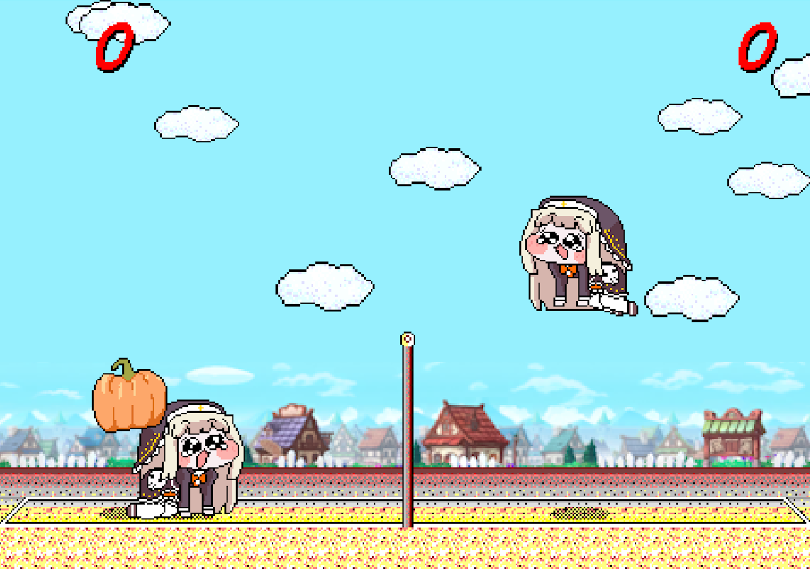

スピーキーバレー
✓ Japanese(日本語) | English | Korean(한국어)
元祖「対戦ぴかちゅ～ ﾋﾞｰﾁﾊﾞﾚｰ編」は、1997年に以下の方々によって制作されました。
1997 (C) SACHI SOFT / SAWAYAKAN Programmers
1997 (C) Satoshi Takenouchi
このゲームは、Kyutae Lee 氏のウェブ版 対戦ぴかちゅ～ ﾋﾞｰﾁﾊﾞﾚｰ編に基づいています。
Web版開発者: Kyutae Lee
このゲームは『トリッカル・もちもちほっペ大作戦』の二次創作物です。
ゲームに登場する『トリッカル・もちもちほっペ大作戦』関連の著作権はすべて [EpidGames] に帰属します。

操作方法:

モバイルでは仮想ジョイスティックでプレイできます。